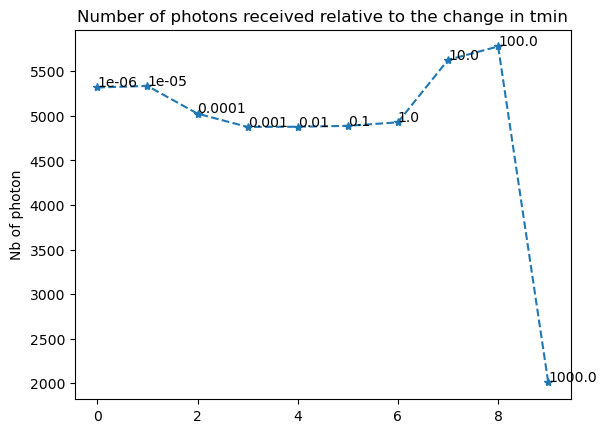
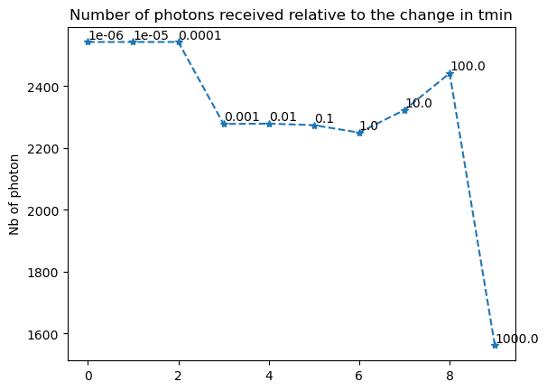

Code Examples
Import the modules necessary for simulation
[7]:
from photonmap.Simulator import *
Setup configuration
[8]:
simulator = Simulator()
simulator.readConfiguration("simulation.ini")
simulator.setupRoom("./assets/testChamber.rad", "./PO")
simulator.setupCaptor("./captors/captors_expe1.csv")
#simulator.setupPlant("./assets/rose-simple4.lpy")
Write .obj
Write .obj.mtl
Run the simulation
[9]:
simulator.run()
11.590499999999999 64.54849999999998
2.3834999999999997 64.54849999999998
Wavelength: 600 - 655
Transparent material: Makrolon
Backface Culling ON
Build photonMap...
Maximum number of threads is 8
nb photons per lights: 1250000
Tracing photons from light n° 1/8...
Done!
writing captor energy...
Tracing photons from light n° 2/8...
Tracing photons from light n° 3/8...
Tracing photons from light n° 4/8...
Tracing photons from light n° 5/8...
Tracing photons from light n° 6/8...
Tracing photons from light n° 7/8...
Tracing photons from light n° 8/8...
Max depth possible: 31
building captor photonmap...
Number of photons on captor elements: 47549
Done!
captor n°0 has 124 photons on it
captor n°1 has 128 photons on it
captor n°2 has 158 photons on it
captor n°3 has 163 photons on it
captor n°4 has 178 photons on it
captor n°5 has 182 photons on it
captor n°6 has 216 photons on it
captor n°7 has 194 photons on it
captor n°8 has 208 photons on it
captor n°9 has 202 photons on it
captor n°10 has 197 photons on it
captor n°11 has 176 photons on it
captor n°12 has 142 photons on it
captor n°13 has 140 photons on it
captor n°14 has 133 photons on it
captor n°15 has 160 photons on it
captor n°16 has 167 photons on it
captor n°17 has 165 photons on it
captor n°18 has 222 photons on it
captor n°19 has 209 photons on it
captor n°20 has 210 photons on it
captor n°21 has 244 photons on it
captor n°22 has 215 photons on it
captor n°23 has 225 photons on it
captor n°24 has 133 photons on it
captor n°25 has 154 photons on it
captor n°26 has 161 photons on it
captor n°27 has 187 photons on it
captor n°28 has 200 photons on it
captor n°29 has 165 photons on it
captor n°30 has 176 photons on it
captor n°31 has 197 photons on it
captor n°32 has 198 photons on it
captor n°33 has 220 photons on it
captor n°34 has 193 photons on it
captor n°35 has 185 photons on it
captor n°36 has 132 photons on it
captor n°37 has 139 photons on it
captor n°38 has 154 photons on it
captor n°39 has 191 photons on it
captor n°40 has 162 photons on it
captor n°41 has 172 photons on it
captor n°42 has 190 photons on it
captor n°43 has 229 photons on it
captor n°44 has 208 photons on it
captor n°45 has 216 photons on it
captor n°46 has 203 photons on it
captor n°47 has 210 photons on it
captor n°48 has 143 photons on it
captor n°49 has 155 photons on it
captor n°50 has 154 photons on it
captor n°51 has 162 photons on it
captor n°52 has 186 photons on it
captor n°53 has 172 photons on it
captor n°54 has 185 photons on it
captor n°55 has 221 photons on it
captor n°56 has 200 photons on it
captor n°57 has 183 photons on it
captor n°58 has 206 photons on it
captor n°59 has 208 photons on it
captor n°60 has 154 photons on it
captor n°61 has 152 photons on it
captor n°62 has 159 photons on it
captor n°63 has 174 photons on it
captor n°64 has 199 photons on it
captor n°65 has 178 photons on it
captor n°66 has 205 photons on it
captor n°67 has 212 photons on it
captor n°68 has 208 photons on it
captor n°69 has 186 photons on it
captor n°70 has 194 photons on it
captor n°71 has 214 photons on it
captor n°72 has 130 photons on it
captor n°73 has 143 photons on it
captor n°74 has 133 photons on it
captor n°75 has 184 photons on it
captor n°76 has 177 photons on it
captor n°77 has 177 photons on it
captor n°78 has 186 photons on it
captor n°79 has 216 photons on it
captor n°80 has 220 photons on it
captor n°81 has 229 photons on it
captor n°82 has 218 photons on it
captor n°83 has 199 photons on it
captor n°84 has 116 photons on it
captor n°85 has 121 photons on it
captor n°86 has 160 photons on it
captor n°87 has 189 photons on it
captor n°88 has 185 photons on it
captor n°89 has 190 photons on it
captor n°90 has 198 photons on it
captor n°91 has 201 photons on it
captor n°92 has 198 photons on it
captor n°93 has 209 photons on it
captor n°94 has 212 photons on it
captor n°95 has 202 photons on it
captor n°96 has 144 photons on it
captor n°97 has 108 photons on it
captor n°98 has 136 photons on it
captor n°99 has 175 photons on it
captor n°100 has 175 photons on it
captor n°101 has 190 photons on it
captor n°102 has 186 photons on it
captor n°103 has 198 photons on it
captor n°104 has 167 photons on it
captor n°105 has 202 photons on it
captor n°106 has 211 photons on it
captor n°107 has 207 photons on it
captor n°108 has 115 photons on it
captor n°109 has 120 photons on it
captor n°110 has 147 photons on it
captor n°111 has 166 photons on it
captor n°112 has 161 photons on it
captor n°113 has 157 photons on it
captor n°114 has 168 photons on it
captor n°115 has 177 photons on it
captor n°116 has 162 photons on it
captor n°117 has 161 photons on it
captor n°118 has 178 photons on it
captor n°119 has 173 photons on it
captor n°120 has 151 photons on it
captor n°121 has 128 photons on it
captor n°122 has 162 photons on it
captor n°123 has 154 photons on it
captor n°124 has 200 photons on it
captor n°125 has 191 photons on it
captor n°126 has 215 photons on it
captor n°127 has 200 photons on it
captor n°128 has 238 photons on it
captor n°129 has 221 photons on it
captor n°130 has 206 photons on it
captor n°131 has 196 photons on it
captor n°132 has 133 photons on it
captor n°133 has 145 photons on it
captor n°134 has 175 photons on it
captor n°135 has 166 photons on it
captor n°136 has 168 photons on it
captor n°137 has 202 photons on it
captor n°138 has 218 photons on it
captor n°139 has 222 photons on it
captor n°140 has 208 photons on it
captor n°141 has 214 photons on it
captor n°142 has 240 photons on it
captor n°143 has 220 photons on it
captor n°144 has 127 photons on it
captor n°145 has 136 photons on it
captor n°146 has 162 photons on it
captor n°147 has 167 photons on it
captor n°148 has 176 photons on it
captor n°149 has 205 photons on it
captor n°150 has 224 photons on it
captor n°151 has 241 photons on it
captor n°152 has 208 photons on it
captor n°153 has 235 photons on it
captor n°154 has 243 photons on it
captor n°155 has 224 photons on it
captor n°156 has 119 photons on it
captor n°157 has 161 photons on it
captor n°158 has 187 photons on it
captor n°159 has 182 photons on it
captor n°160 has 191 photons on it
captor n°161 has 227 photons on it
captor n°162 has 207 photons on it
captor n°163 has 245 photons on it
captor n°164 has 252 photons on it
captor n°165 has 243 photons on it
captor n°166 has 247 photons on it
captor n°167 has 261 photons on it
captor n°168 has 132 photons on it
captor n°169 has 151 photons on it
captor n°170 has 190 photons on it
captor n°171 has 185 photons on it
captor n°172 has 236 photons on it
captor n°173 has 259 photons on it
captor n°174 has 275 photons on it
captor n°175 has 278 photons on it
captor n°176 has 260 photons on it
captor n°177 has 234 photons on it
captor n°178 has 262 photons on it
captor n°179 has 231 photons on it
captor n°180 has 130 photons on it
captor n°181 has 162 photons on it
captor n°182 has 177 photons on it
captor n°183 has 218 photons on it
captor n°184 has 210 photons on it
captor n°185 has 260 photons on it
captor n°186 has 297 photons on it
captor n°187 has 285 photons on it
captor n°188 has 284 photons on it
captor n°189 has 273 photons on it
captor n°190 has 257 photons on it
captor n°191 has 270 photons on it
captor n°192 has 143 photons on it
captor n°193 has 178 photons on it
captor n°194 has 185 photons on it
captor n°195 has 232 photons on it
captor n°196 has 250 photons on it
captor n°197 has 286 photons on it
captor n°198 has 296 photons on it
captor n°199 has 291 photons on it
captor n°200 has 288 photons on it
captor n°201 has 245 photons on it
captor n°202 has 245 photons on it
captor n°203 has 287 photons on it
captor n°204 has 143 photons on it
captor n°205 has 149 photons on it
captor n°206 has 169 photons on it
captor n°207 has 206 photons on it
captor n°208 has 229 photons on it
captor n°209 has 274 photons on it
captor n°210 has 303 photons on it
captor n°211 has 294 photons on it
captor n°212 has 294 photons on it
captor n°213 has 280 photons on it
captor n°214 has 259 photons on it
captor n°215 has 233 photons on it
captor n°216 has 127 photons on it
captor n°217 has 141 photons on it
captor n°218 has 171 photons on it
captor n°219 has 225 photons on it
captor n°220 has 225 photons on it
captor n°221 has 279 photons on it
captor n°222 has 309 photons on it
captor n°223 has 277 photons on it
captor n°224 has 286 photons on it
captor n°225 has 270 photons on it
captor n°226 has 253 photons on it
captor n°227 has 248 photons on it
captor n°228 has 120 photons on it
captor n°229 has 114 photons on it
captor n°230 has 146 photons on it
captor n°231 has 177 photons on it
captor n°232 has 231 photons on it
captor n°233 has 235 photons on it
captor n°234 has 259 photons on it
captor n°235 has 253 photons on it
captor n°236 has 269 photons on it
captor n°237 has 253 photons on it
captor n°238 has 213 photons on it
captor n°239 has 230 photons on it
Done!
Time taken: 14.055834770202637
correction ratio: 0.1795626544381357
Wavelength: 655 - 665
Transparent material: Makrolon
Backface Culling ON
Build photonMap...
Maximum number of threads is 8Done!
writing captor energy...
nb photons per lights: 1250000
Tracing photons from light n° 1/8...
Tracing photons from light n° 2/8...
Tracing photons from light n° 3/8...
Tracing photons from light n° 4/8...
Tracing photons from light n° 5/8...
Tracing photons from light n° 6/8...
Tracing photons from light n° 7/8...
Tracing photons from light n° 8/8...
Max depth possible: 30
building captor photonmap...
Number of photons on captor elements: 47828
Done!
captor n°0 has 139 photons on it
captor n°1 has 159 photons on it
captor n°2 has 157 photons on it
captor n°3 has 175 photons on it
captor n°4 has 185 photons on it
captor n°5 has 212 photons on it
captor n°6 has 212 photons on it
captor n°7 has 193 photons on it
captor n°8 has 188 photons on it
captor n°9 has 232 photons on it
captor n°10 has 194 photons on it
captor n°11 has 189 photons on it
captor n°12 has 138 photons on it
captor n°13 has 168 photons on it
captor n°14 has 157 photons on it
captor n°15 has 168 photons on it
captor n°16 has 158 photons on it
captor n°17 has 179 photons on it
captor n°18 has 202 photons on it
captor n°19 has 213 photons on it
captor n°20 has 179 photons on it
captor n°21 has 220 photons on it
captor n°22 has 188 photons on it
captor n°23 has 219 photons on it
captor n°24 has 145 photons on it
captor n°25 has 157 photons on it
captor n°26 has 160 photons on it
captor n°27 has 177 photons on it
captor n°28 has 163 photons on it
captor n°29 has 213 photons on it
captor n°30 has 204 photons on it
captor n°31 has 197 photons on it
captor n°32 has 198 photons on it
captor n°33 has 209 photons on it
captor n°34 has 195 photons on it
captor n°35 has 207 photons on it
captor n°36 has 138 photons on it
captor n°37 has 131 photons on it
captor n°38 has 155 photons on it
captor n°39 has 157 photons on it
captor n°40 has 193 photons on it
captor n°41 has 151 photons on it
captor n°42 has 204 photons on it
captor n°43 has 195 photons on it
captor n°44 has 197 photons on it
captor n°45 has 177 photons on it
captor n°46 has 200 photons on it
captor n°47 has 216 photons on it
captor n°48 has 146 photons on it
captor n°49 has 130 photons on it
captor n°50 has 141 photons on it
captor n°51 has 187 photons on it
captor n°52 has 171 photons on it
captor n°53 has 191 photons on it
captor n°54 has 194 photons on it
captor n°55 has 211 photons on it
captor n°56 has 231 photons on it
captor n°57 has 217 photons on it
captor n°58 has 218 photons on it
captor n°59 has 237 photons on it
captor n°60 has 134 photons on it
captor n°61 has 153 photons on it
captor n°62 has 179 photons on it
captor n°63 has 158 photons on it
captor n°64 has 183 photons on it
captor n°65 has 166 photons on it
captor n°66 has 179 photons on it
captor n°67 has 211 photons on it
captor n°68 has 222 photons on it
captor n°69 has 222 photons on it
captor n°70 has 214 photons on it
captor n°71 has 185 photons on it
captor n°72 has 120 photons on it
captor n°73 has 150 photons on it
captor n°74 has 170 photons on it
captor n°75 has 152 photons on it
captor n°76 has 166 photons on it
captor n°77 has 183 photons on it
captor n°78 has 220 photons on it
captor n°79 has 199 photons on it
captor n°80 has 218 photons on it
captor n°81 has 216 photons on it
captor n°82 has 228 photons on it
captor n°83 has 195 photons on it
captor n°84 has 139 photons on it
captor n°85 has 133 photons on it
captor n°86 has 157 photons on it
captor n°87 has 168 photons on it
captor n°88 has 186 photons on it
captor n°89 has 175 photons on it
captor n°90 has 198 photons on it
captor n°91 has 185 photons on it
captor n°92 has 206 photons on it
captor n°93 has 201 photons on it
captor n°94 has 188 photons on it
captor n°95 has 217 photons on it
captor n°96 has 138 photons on it
captor n°97 has 148 photons on it
captor n°98 has 145 photons on it
captor n°99 has 159 photons on it
captor n°100 has 184 photons on it
captor n°101 has 179 photons on it
captor n°102 has 212 photons on it
captor n°103 has 166 photons on it
captor n°104 has 196 photons on it
captor n°105 has 198 photons on it
captor n°106 has 187 photons on it
captor n°107 has 195 photons on it
captor n°108 has 113 photons on it
captor n°109 has 109 photons on it
captor n°110 has 137 photons on it
captor n°111 has 159 photons on it
captor n°112 has 145 photons on it
captor n°113 has 153 photons on it
captor n°114 has 161 photons on it
captor n°115 has 170 photons on it
captor n°116 has 165 photons on it
captor n°117 has 180 photons on it
captor n°118 has 212 photons on it
captor n°119 has 173 photons on it
captor n°120 has 130 photons on it
captor n°121 has 128 photons on it
captor n°122 has 140 photons on it
captor n°123 has 168 photons on it
captor n°124 has 176 photons on it
captor n°125 has 218 photons on it
captor n°126 has 215 photons on it
captor n°127 has 202 photons on it
captor n°128 has 211 photons on it
captor n°129 has 204 photons on it
captor n°130 has 237 photons on it
captor n°131 has 215 photons on it
captor n°132 has 123 photons on it
captor n°133 has 137 photons on it
captor n°134 has 150 photons on it
captor n°135 has 157 photons on it
captor n°136 has 167 photons on it
captor n°137 has 179 photons on it
captor n°138 has 180 photons on it
captor n°139 has 241 photons on it
captor n°140 has 202 photons on it
captor n°141 has 213 photons on it
captor n°142 has 246 photons on it
captor n°143 has 233 photons on it
captor n°144 has 131 photons on it
captor n°145 has 173 photons on it
captor n°146 has 160 photons on it
captor n°147 has 180 photons on it
captor n°148 has 215 photons on it
captor n°149 has 210 photons on it
captor n°150 has 201 photons on it
captor n°151 has 195 photons on it
captor n°152 has 235 photons on it
captor n°153 has 193 photons on it
captor n°154 has 212 photons on it
captor n°155 has 264 photons on it
captor n°156 has 138 photons on it
captor n°157 has 142 photons on it
captor n°158 has 200 photons on it
captor n°159 has 185 photons on it
captor n°160 has 221 photons on it
captor n°161 has 209 photons on it
captor n°162 has 214 photons on it
captor n°163 has 245 photons on it
captor n°164 has 238 photons on it
captor n°165 has 243 photons on it
captor n°166 has 215 photons on it
captor n°167 has 232 photons on it
captor n°168 has 133 photons on it
captor n°169 has 155 photons on it
captor n°170 has 157 photons on it
captor n°171 has 227 photons on it
captor n°172 has 221 photons on it
captor n°173 has 230 photons on it
captor n°174 has 258 photons on it
captor n°175 has 270 photons on it
captor n°176 has 266 photons on it
captor n°177 has 282 photons on it
captor n°178 has 261 photons on it
captor n°179 has 244 photons on it
captor n°180 has 143 photons on it
captor n°181 has 140 photons on it
captor n°182 has 184 photons on it
captor n°183 has 242 photons on it
captor n°184 has 215 photons on it
captor n°185 has 272 photons on it
captor n°186 has 274 photons on it
captor n°187 has 260 photons on it
captor n°188 has 289 photons on it
captor n°189 has 267 photons on it
captor n°190 has 250 photons on it
captor n°191 has 270 photons on it
captor n°192 has 120 photons on it
captor n°193 has 195 photons on it
captor n°194 has 183 photons on it
captor n°195 has 236 photons on it
captor n°196 has 246 photons on it
captor n°197 has 280 photons on it
captor n°198 has 284 photons on it
captor n°199 has 286 photons on it
captor n°200 has 296 photons on it
captor n°201 has 269 photons on it
captor n°202 has 302 photons on it
captor n°203 has 273 photons on it
captor n°204 has 143 photons on it
captor n°205 has 168 photons on it
captor n°206 has 169 photons on it
captor n°207 has 212 photons on it
captor n°208 has 272 photons on it
captor n°209 has 304 photons on it
captor n°210 has 309 photons on it
captor n°211 has 329 photons on it
captor n°212 has 274 photons on it
captor n°213 has 290 photons on it
captor n°214 has 277 photons on it
captor n°215 has 269 photons on it
captor n°216 has 135 photons on it
captor n°217 has 158 photons on it
captor n°218 has 181 photons on it
captor n°219 has 219 photons on it
captor n°220 has 246 photons on it
captor n°221 has 251 photons on it
captor n°222 has 296 photons on it
captor n°223 has 298 photons on it
captor n°224 has 290 photons on it
captor n°225 has 266 photons on it
captor n°226 has 258 photons on it
captor n°227 has 260 photons on it
captor n°228 has 101 photons on it
captor n°229 has 136 photons on it
captor n°230 has 141 photons on it
captor n°231 has 185 photons on it
captor n°232 has 204 photons on it
captor n°233 has 265 photons on it
captor n°234 has 275 photons on it
captor n°235 has 275 photons on it
captor n°236 has 255 photons on it
captor n°237 has 225 photons on it
captor n°238 has 230 photons on it
captor n°239 has 262 photons on it
Done!
Time taken: 14.47637677192688
correction ratio: 0.03692572251872624
Test Tmin in complete scene
[14]:
simulator.test_t_min(int(1e6), 1e-6, 10, False)
---------------------------------
Test Tmin = 1e-06
Transparent material: Makrolon
Backface Culling ON
Maximum number of threads is 8
nb photons per lights: 125000
Tracing photons from light n° 1/8...
Tracing photons from light n° 2/8...
Tracing photons from light n° 3/8...
Tracing photons from light n° 4/8...
Tracing photons from light n° 5/8...
Tracing photons from light n° 6/8...
Tracing photons from light n° 7/8...
Tracing photons from light n° 8/8...
Max depth possible: 25
building captor photonmap...
Number of photons on captor elements: 5319
Done!
Number of photons received in total is 5319
---------------------------------
---------------------------------
Test Tmin = 1e-05
Transparent material: Makrolon
Backface Culling ON
Maximum number of threads is 8
nb photons per lights: 125000
Tracing photons from light n° 1/8...
Tracing photons from light n° 2/8...
Tracing photons from light n° 3/8...
Tracing photons from light n° 4/8...
Tracing photons from light n° 5/8...
Tracing photons from light n° 6/8...
Tracing photons from light n° 7/8...
Tracing photons from light n° 8/8...
Max depth possible: 25
building captor photonmap...
Number of photons on captor elements: 5336
Done!
Number of photons received in total is 5336
---------------------------------
---------------------------------
Test Tmin = 0.0001
Transparent material: Makrolon
Backface Culling ON
Maximum number of threads is 8
nb photons per lights: 125000
Tracing photons from light n° 1/8...
Tracing photons from light n° 2/8...
Tracing photons from light n° 3/8...
Tracing photons from light n° 4/8...
Tracing photons from light n° 5/8...
Tracing photons from light n° 6/8...
Tracing photons from light n° 7/8...
Tracing photons from light n° 8/8...
Max depth possible: 30
building captor photonmap...
Number of photons on captor elements: 5025
Done!
Number of photons received in total is 5025
---------------------------------
---------------------------------
Test Tmin = 0.001
Transparent material: Makrolon
Backface Culling ON
Maximum number of threads is 8
nb photons per lights: 125000
Tracing photons from light n° 1/8...
Tracing photons from light n° 2/8...
Tracing photons from light n° 3/8...
Tracing photons from light n° 4/8...
Tracing photons from light n° 5/8...
Tracing photons from light n° 6/8...
Tracing photons from light n° 7/8...
Tracing photons from light n° 8/8...
Max depth possible: 30
building captor photonmap...
Number of photons on captor elements: 4876
Done!
Number of photons received in total is 4876
---------------------------------
---------------------------------
Test Tmin = 0.01
Transparent material: Makrolon
Backface Culling ON
Number of photons received in total is 4878
---------------------------------
---------------------------------
Test Tmin = 0.1
Maximum number of threads is 8
nb photons per lights: 125000
Tracing photons from light n° 1/8...
Tracing photons from light n° 2/8...
Tracing photons from light n° 3/8...
Tracing photons from light n° 4/8...
Tracing photons from light n° 5/8...
Tracing photons from light n° 6/8...
Tracing photons from light n° 7/8...
Tracing photons from light n° 8/8...
Max depth possible: 30
building captor photonmap...
Number of photons on captor elements: 4878
Done!
Transparent material: Makrolon
Backface Culling ON
Number of photons received in total is 4888
---------------------------------
---------------------------------
Test Tmin = 1.0
Maximum number of threads is 8
nb photons per lights: 125000
Tracing photons from light n° 1/8...
Tracing photons from light n° 2/8...
Tracing photons from light n° 3/8...
Tracing photons from light n° 4/8...
Tracing photons from light n° 5/8...
Tracing photons from light n° 6/8...
Tracing photons from light n° 7/8...
Tracing photons from light n° 8/8...
Max depth possible: 30
building captor photonmap...
Number of photons on captor elements: 4888
Done!
Transparent material: Makrolon
Backface Culling ON
Maximum number of threads is 8
nb photons per lights: 125000
Tracing photons from light n° 1/8...
Tracing photons from light n° 2/8...
Tracing photons from light n° 3/8...
Tracing photons from light n° 4/8...
Tracing photons from light n° 5/8...
Tracing photons from light n° 6/8...
Tracing photons from light n° 7/8...
Tracing photons from light n° 8/8...
Max depth possible: 33
building captor photonmap...
Number of photons on captor elements: 4928
Done!
Number of photons received in total is 4928
---------------------------------
---------------------------------
Test Tmin = 10.0
Transparent material: Makrolon
Backface Culling ON
Number of photons received in total is 5629
---------------------------------
---------------------------------
Test Tmin = 100.0
Maximum number of threads is 8
nb photons per lights: 125000
Tracing photons from light n° 1/8...
Tracing photons from light n° 2/8...
Tracing photons from light n° 3/8...
Tracing photons from light n° 4/8...
Tracing photons from light n° 5/8...
Tracing photons from light n° 6/8...
Tracing photons from light n° 7/8...
Tracing photons from light n° 8/8...
Max depth possible: 28
building captor photonmap...
Number of photons on captor elements: 5629
Done!
Transparent material: Makrolon
Backface Culling ON
Maximum number of threads is 8
nb photons per lights: 125000
Tracing photons from light n° 1/8...
Tracing photons from light n° 2/8...
Tracing photons from light n° 3/8...
Tracing photons from light n° 4/8...
Tracing photons from light n° 5/8...
Tracing photons from light n° 6/8...
Tracing photons from light n° 7/8...
Tracing photons from light n° 8/8...
Max depth possible: 28
building captor photonmap...
Number of photons on captor elements: 5779
Done!
Number of photons received in total is 5779
---------------------------------
---------------------------------
Test Tmin = 1000.0
Transparent material: Makrolon
Backface Culling ON
Maximum number of threads is 8
nb photons per lights: 125000
Tracing photons from light n° 1/8...
Tracing photons from light n° 2/8...
Tracing photons from light n° 3/8...
Tracing photons from light n° 4/8...
Tracing photons from light n° 5/8...
Tracing photons from light n° 6/8...
Tracing photons from light n° 7/8...
Tracing photons from light n° 8/8...
Max depth possible: 12
building captor photonmap...
Number of photons on captor elements: 2008
Done!
Number of photons received in total is 2008
---------------------------------

Test Tmin in scene with only lamps and captors
[5]:
simulator.test_t_min(int(1e6), 1e-6, 10, True)
---------------------------------
Test Tmin = 1e-06
Transparent material: Makrolon
Backface Culling ON
Maximum number of threads is 8
nb photons per lights: 125000
Tracing photons from light n° 1/8...
Tracing photons from light n° 2/8...
Tracing photons from light n° 3/8...
Tracing photons from light n° 4/8...
Tracing photons from light n° 5/8...
Tracing photons from light n° 6/8...
Tracing photons from light n° 7/8...
Tracing photons from light n° 8/8...
Max depth possible: 2
building captor photonmap...
Number of photons on captor elements: 2543
Done!
Number of photons received in total is 2543
---------------------------------
---------------------------------
Test Tmin = 1e-05
Transparent material: Makrolon
Backface Culling ON
Maximum number of threads is 8
nb photons per lights: 125000
Tracing photons from light n° 1/8...
Tracing photons from light n° 2/8...
Tracing photons from light n° 3/8...
Tracing photons from light n° 4/8...
Tracing photons from light n° 5/8...
Tracing photons from light n° 6/8...
Tracing photons from light n° 7/8...
Tracing photons from light n° 8/8...
Max depth possible: 2
building captor photonmap...
Number of photons on captor elements: 2543
Done!
Number of photons received in total is 2543
---------------------------------
---------------------------------
Test Tmin = 0.0001
Transparent material: Makrolon
Backface Culling ON
Number of photons received in total is 2543
---------------------------------
---------------------------------
Test Tmin = 0.001
Maximum number of threads is 8
nb photons per lights: 125000
Tracing photons from light n° 1/8...
Tracing photons from light n° 2/8...
Tracing photons from light n° 3/8...
Tracing photons from light n° 4/8...
Tracing photons from light n° 5/8...
Tracing photons from light n° 6/8...
Tracing photons from light n° 7/8...
Tracing photons from light n° 8/8...
Max depth possible: 2
building captor photonmap...
Number of photons on captor elements: 2543
Done!
Transparent material: Makrolon
Backface Culling ON
Number of photons received in total is 2278
---------------------------------
---------------------------------
Test Tmin = 0.01
Maximum number of threads is 8
nb photons per lights: 125000
Tracing photons from light n° 1/8...
Tracing photons from light n° 2/8...
Tracing photons from light n° 3/8...
Tracing photons from light n° 4/8...
Tracing photons from light n° 5/8...
Tracing photons from light n° 6/8...
Tracing photons from light n° 7/8...
Tracing photons from light n° 8/8...
Max depth possible: 2
building captor photonmap...
Number of photons on captor elements: 2278
Done!
Transparent material: Makrolon
Backface Culling ON
Number of photons received in total is 2279
---------------------------------
---------------------------------
Test Tmin = 0.1
Maximum number of threads is 8
nb photons per lights: 125000
Tracing photons from light n° 1/8...
Tracing photons from light n° 2/8...
Tracing photons from light n° 3/8...
Tracing photons from light n° 4/8...
Tracing photons from light n° 5/8...
Tracing photons from light n° 6/8...
Tracing photons from light n° 7/8...
Tracing photons from light n° 8/8...
Max depth possible: 2
building captor photonmap...
Number of photons on captor elements: 2279
Done!
Transparent material: Makrolon
Backface Culling ON
Number of photons received in total is 2274
---------------------------------
---------------------------------
Test Tmin = 1.0
Maximum number of threads is 8
nb photons per lights: 125000
Tracing photons from light n° 1/8...
Tracing photons from light n° 2/8...
Tracing photons from light n° 3/8...
Tracing photons from light n° 4/8...
Tracing photons from light n° 5/8...
Tracing photons from light n° 6/8...
Tracing photons from light n° 7/8...
Tracing photons from light n° 8/8...
Max depth possible: 2
building captor photonmap...
Number of photons on captor elements: 2274
Done!
Transparent material: Makrolon
Backface Culling ON
Maximum number of threads is 8
nb photons per lights: 125000
Tracing photons from light n° 1/8...
Tracing photons from light n° 2/8...
Tracing photons from light n° 3/8...
Tracing photons from light n° 4/8...
Tracing photons from light n° 5/8...
Tracing photons from light n° 6/8...
Tracing photons from light n° 7/8...
Tracing photons from light n° 8/8...
Max depth possible: 2
building captor photonmap...
Number of photons on captor elements: 2250
Done!
Number of photons received in total is 2250
---------------------------------
---------------------------------
Test Tmin = 10.0
Transparent material: Makrolon
Backface Culling ON
Number of photons received in total is 2323
---------------------------------
---------------------------------
Test Tmin = 100.0
Maximum number of threads is 8
nb photons per lights: 125000
Tracing photons from light n° 1/8...
Tracing photons from light n° 2/8...
Tracing photons from light n° 3/8...
Tracing photons from light n° 4/8...
Tracing photons from light n° 5/8...
Tracing photons from light n° 6/8...
Tracing photons from light n° 7/8...
Tracing photons from light n° 8/8...
Max depth possible: 2
building captor photonmap...
Number of photons on captor elements: 2323
Done!
Transparent material: Makrolon
Backface Culling ON
Maximum number of threads is 8
nb photons per lights: 125000
Tracing photons from light n° 1/8...
Tracing photons from light n° 2/8...
Tracing photons from light n° 3/8...
Tracing photons from light n° 4/8...
Tracing photons from light n° 5/8...
Tracing photons from light n° 6/8...
Tracing photons from light n° 7/8...
Tracing photons from light n° 8/8...
Max depth possible: 2
building captor photonmap...
Number of photons on captor elements: 2442
Done!
Number of photons received in total is 2442
---------------------------------
---------------------------------
Test Tmin = 1000.0
Transparent material: Makrolon
Backface Culling ON
Number of photons received in total is 1562
---------------------------------
Maximum number of threads is 8
nb photons per lights: 125000
Tracing photons from light n° 1/8...
Tracing photons from light n° 2/8...
Tracing photons from light n° 3/8...
Tracing photons from light n° 4/8...
Tracing photons from light n° 5/8...
Tracing photons from light n° 6/8...
Tracing photons from light n° 7/8...
Tracing photons from light n° 8/8...
Max depth possible: 1
building captor photonmap...
Number of photons on captor elements: 1562
Done!
